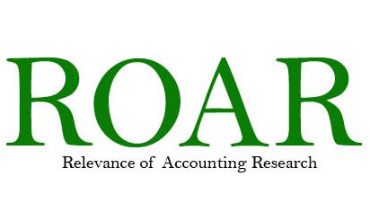

City University of Hong Kong
 |
Publication and Academic Workshops Please click the link to see the list of top-tier publications. Please click the link to see the list of seminars and brown bag workshops held in 2020. |
 |
AC Ph.D. Student's Gathering and Experience Sharing |
 |
Congratulations to Professor Kim on his new role as JIBS Editor |
|  | CityU Ranked as the Best Institution in Hong Kong in term of ROAR scroes |
Paper accepted by the Jouranal of Financal and Quantiative Anlysis (JFQA) 1. Professor Yangyang Chen 2. Dr Xiaoli Hu |
 |
A New Academic Staff, Professor Yangyang Chen Joined the AC family in October 2019 |

Get-to-gather Lunch on 9 January to Celebrate the Start of New Year 2020 |